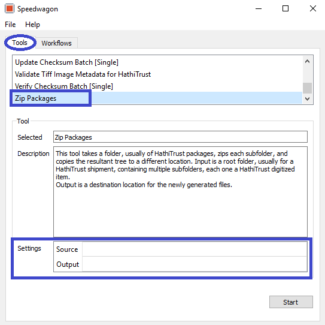

Simplified Workflow - How to package vendor files¶
When packages contain files generated by a vendor, a simplified workflow is recommended.
Regenerate Checksum Batch (Multiple) - this is to ensure all checksums are correct and updated once files are returned from the vendor.
Navigate to Regenerate Checksum Batch (Multiple) tool in Speedwagon
Select file path for Input
Select start.
Speedwagon will regenerate checksum md5 files
Use Verify HathiTrust Package Completeness to verify each book/item contains files needed for HathiTrust.
Select Verify HathiTrust Package Completeness in the Workflows tab.
Select the file path for source.
Select setting for:
Check for the page_data in meta.yml and
Check ALTO OCR xml files to False or True depending on package delivered by vendor.
Change Check OCR xml files are utf-8 to True.

When the tool finishes, review the manifest and status in the prompt for errors. Speedwagon will list any missing files and in what directory files are missing. Speedwagon also lists the files present by book.

Send metadata file for books in batch to Zephir when HathiTrust Package Completeness test is successful. Depending on an institution’s, procedures, a metadata contact may do this. The U of I’s metadata contact is responsible for this.
HathiTrust sends a verification email with notification metadata was successfully received.
Zip Packages
In the Tools tab, select Zip Packages
Set output location. A specific server is designated for U of I HathiTrust package submission.
When zipping is complete send email to HathiTrust (feedback@issues.hathitrust.org) using the following template:
HathiTrust sends 3 emails:
Notification a submission was received.
Status update and notification of any ingest issues.
Verification content was successfully ingested in HathiTrust Digital Library